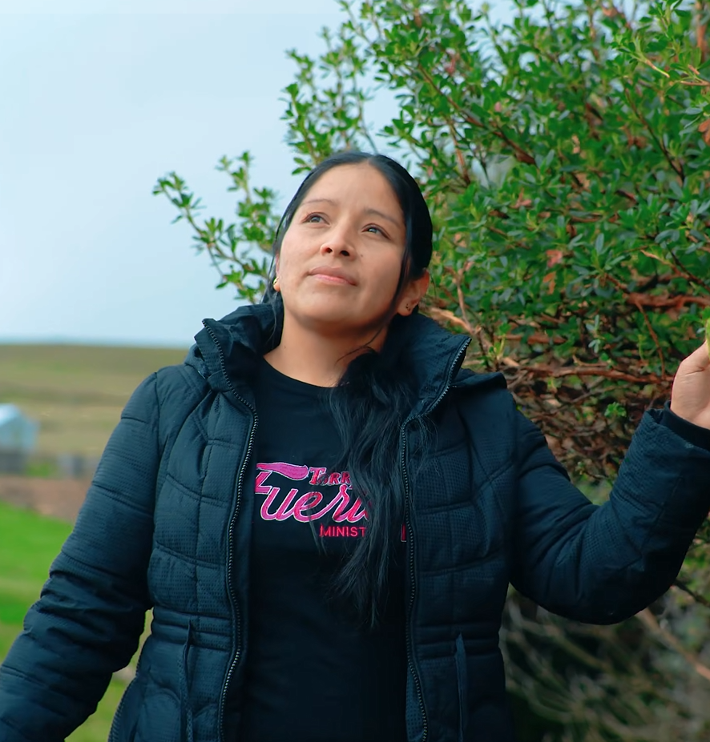
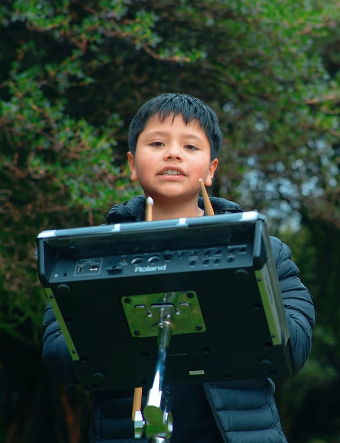

David
Voz Principal y Guitarra Acústica
Llevando el mensaje de esperanza y fe a través de cada acorde. Únete a nuestra comunidad.
TorreFuerte nació con la visión de conectar corazones a través de la adoración genuina...
Voz Principal y Guitarra Acústica

Batería y Percusión
Momentos especiales de adoración y ministerio.
Disfruta de nuestras últimas producciones audiovisuales en YouTube.
No estás solo. Déjanos tu petición y estaremos orando por ti como ministerio.
"Pido oración por la salud de mi familia en este tiempo..."
- Anónimo

¿Te gustaría que seamos parte de tu próximo evento o servicio? Escríbenos y lleva adoración genuina a tu congregación.